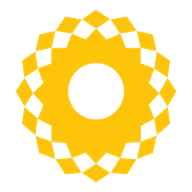

SOLAR CUP TWO
行動戰情終端
● CONNECTING
!
提醒
賽程接近時將在此顯示通知
OPERATION STATUS · --:--
全場戰情
資料同步中
賽程推進
0／310 場完成
競資
休資
開幕
初賽
複賽
決勝
頒獎
待開賽目前賽事階段
即時同步賽程狀態
力場排行・球團總積分
資料同步中
FOLLOWING TEAMS · 0/3
我的關注
最多關注3隊資料載入中
提醒依照真實賽程推進觸發，而非只依表定時間。前方剩2場時預告，前一場進行中時通知至場邊準備。
通知僅在 App 開啟時運作（含背景分頁，視系統而定）；iPhone 需先「加入主畫面」後開啟通知。
通知僅在 App 開啟時運作（含背景分頁，視系統而定）；iPhone 需先「加入主畫面」後開啟通知。
COURTS LIVE · 10 COURTS
LIVE 賽況
目前 0 場進行中資料載入中
QUALIFYING · BRACKET
晉級戰況
分流結果即時更新四階級分流資料同步中
PLATINUM
白金
—／20 隊GOLD
黃金
—／20 隊SILVER
白銀
—／30 隊BRONZE
青銅
—／30 隊資格賽戰況組內排名
資料同步中
複賽晉級狀態同分判定
資料同步中
我的關注・晉級狀態自動追蹤
資料同步中
階段路徑目前：—
資格賽
初賽
複賽
8強
4強
決賽
封王
AT FIELD RANKING · LIVE
力場排行
球團總積分資料同步中
完整排名資料同步中
資料同步中
⚠ 測試資料 · 非正式成績（賽務演練中）
設定我的關注
選擇1～3隊，賽程接近時主動提醒。